Buku Panduan Pengguna (User Manual) Sistem Pemantauan KPI RAHMA
Real-time Analytical Hub for Management & Accountability — Platform Mandiri Pelacakan KPI Departemen, Gerbang Logika Mitigasi Risiko, dan Pelaporan Eksekutif PT Global Service Indonesia (GSI).
Arsitektur, Instalasi & Peta Rute Sistem
RAHMA beroperasi sebagai aplikasi web mandiri (standalone) dengan mesin kalkulasi KPI real-time di atas Node.js dan basis data relasional PostgreSQL 18 (`rahma_kpi`). Seluruh proses bisnis dari pengisian realisasi bulanan hingga pembuatan laporan PDF Direksi berjalan tanpa ketergantungan pada layanan pihak ketiga.
Persiapan Layanan PostgreSQL & Basis Data `rahma_kpi`
Pastikan layanan PostgreSQL aktif di port 5432 dengan akun postgres dan database
rahma_kpi telah tersedia. Konfigurasi koneksi diatur otomatis di src/db.js
(mendukung variabel lingkungan PGHOST, PGPORT, PGUSER,
PGPASSWORD, dan PGDATABASE).
Instalasi Dependensi & Migrasi Data (Opsional)
Buka terminal pada direktori proyek c:\Users\Legion\rahma-kpi, jalankan
npm install. Jika Anda ingin memigrasikan data dari berkas SQLite lama ke PostgreSQL,
jalankan npm run migrate:pg.
Menjalankan Server Produksi & Verifikasi Unit Test
Jalankan npm test untuk memverifikasi mesin kalkulasi polaritas, agregasi YTD, dan gerbang
mitigasi, lalu nyalakan server dengan perintah npm start (atau node server.js).
Akses aplikasi melalui browser di http://localhost:3456.
# 1. Verifikasi unit test & stress test (10.000 agregasi YTD)
npm test
# 2. Jalankan server produksi RAHMA (PostgreSQL 127.0.0.1:5432/rahma_kpi)
node server.js
# -> URL Aplikasi : http://localhost:3456| Rute URL | Berkas Frontend | Fungsi & Hak Akses |
|---|---|---|
/ atau /home |
public/home.html |
Landing Page Produk RAHMA: Ringkasan arsitektur, simulasi gauge 5 divisi, dan pintasan masuk. |
/login |
public/login.html |
Gerbang Masuk RBAC: Autentikasi email korporasi, tombol masuk cepat akun demo, dan pratinjau peran. |
/signup |
public/signup.html |
Pendaftaran Akun Baru: Registrasi mandiri untuk peran Division Leader atau Executive / BOD. |
/app atau /dashboard |
public/index.html |
Workspace Utama (4 Menu): Executive Dashboard, Input KPI & Mitigasi, CPMD Hub, dan Atribut HEX. |
Halaman Utama, Registrasi & Autentikasi RBAC
Saat pengguna mengakses alamat akar http://localhost:3456/, sistem menampilkan halaman utama
(Landing Page) yang memperkenalkan disiplin tata kelola KPI PT Global Service Indonesia beserta
simulator interaktif pencapaian 5 departemen (OPS, COM, FAT,
HCGA, dan DS).
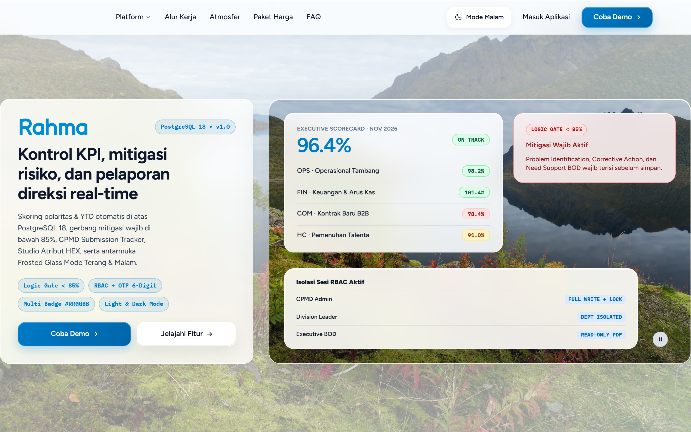
Masuk Melalui Halaman Login RBAC (`/login`)
Klik tombol Buka Dashboard atau akses http://localhost:3456/login. Masukkan
email korporasi dan kata sandi, atau klik salah satu tombol Masuk Cepat Akun Demo
(kata sandi standar: rahma2026) untuk langsung masuk sesuai peran.
Mendaftarkan Akun Baru (`/signup`)
Bagi Division Leader atau anggota Direksi baru, klik tautan Daftar Akun Baru (Sign Up),
isi nama lengkap, email korporasi @gsi.co.id, jabatan, pilih peran (Division Leader
wajib memilih departemen pemilik), dan buat kata sandi minimal 6 karakter.
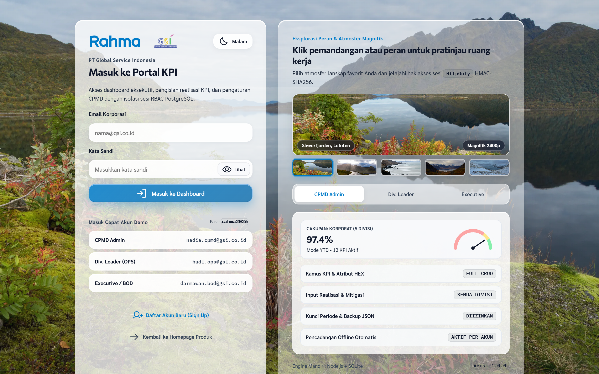
| Peran (Role RBAC) | Akun Demo Siap Pakai | Cakupan Wewenang di Dalam Sistem |
|---|---|---|
| CPMD_ADMIN | nadia.cpmd@gsi.co.idSandi: rahma2026 |
Akses penuh ke seluruh 4 menu: CRUD Departemen, CRUD Kamus KPI, CRUD Atribut HEX, Kunci Periode, Input semua divisi, dan Backup JSON. |
| DIV_LEADER | budi.ops@gsi.co.idSandi: rahma2026 |
Fokus pada pengisian angka realisasi (Actual) dan dokumen mitigasi risiko untuk departemen yang dipimpinnya. |
| EXECUTIVE | darmawan.bod@gsi.co.idSandi: rahma2026 |
Tampilan rapat direksi (Boardroom View): memantau Executive Dashboard, Fokus Indikator Merah, Papan Eskalasi, dan Ekspor PDF. |
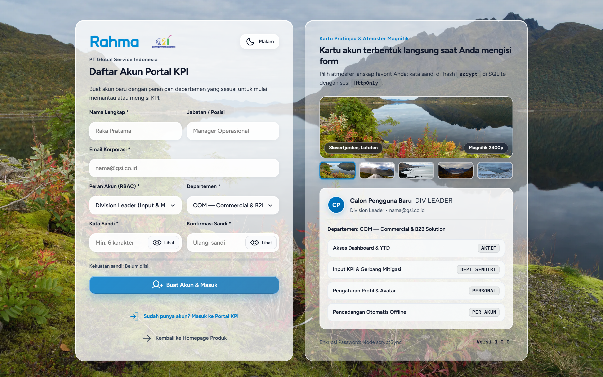
Menu 1: Executive Performance Dashboard & Mode Malam
Setelah berhasil masuk ke /app, pengguna langsung diarahkan ke Executive Performance
Dashboard. Halaman ini dirancang berstandar PPT-Ready untuk menggantikan kompilasi slide
manual dalam rapat evaluasi bulanan maupun kuartalan bersama Direksi (BOD).
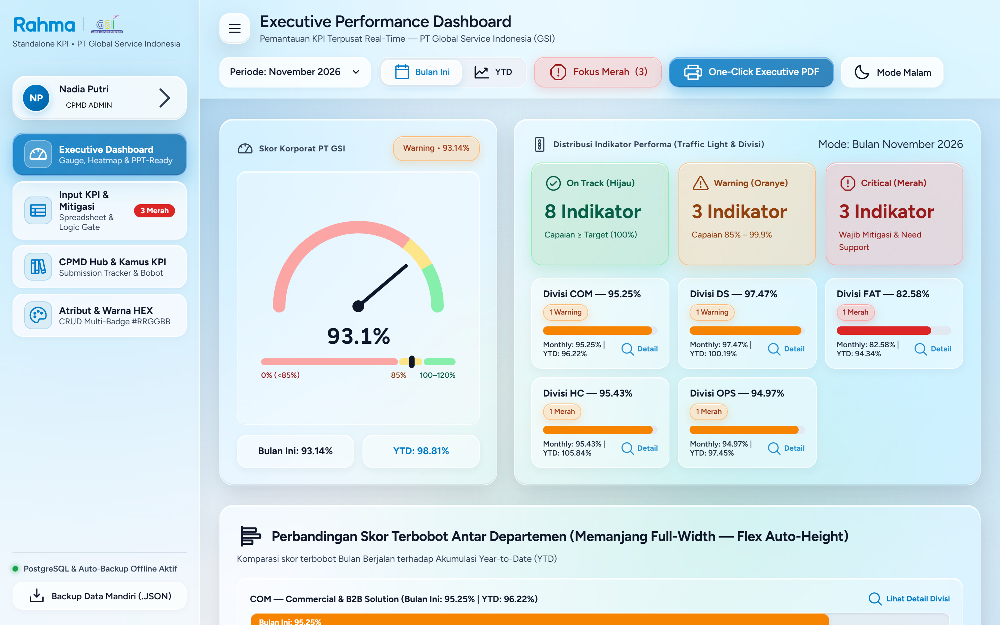
1. Speedometer & Gauge Bar Terkalibrasi
Busur setengah lingkaran (-90° s/d +90°) dan pita horizontal di bawahnya
memetakan rentang 0%–120% secara presisi: Merah <85%,
Kuning 85–99.9%, dan Hijau 100–120%.
2. Sakelar Bulan Ini vs Akumulasi YTD
Gunakan tombol Bulan Ini dan YTD pada bilah kontrol atas untuk mengalihkan
seluruh perhitungan skor dari periode tunggal ke akumulasi Januari s/d bulan terpilih (SUM,
AVG, atau LAST_VALUE).
3. Tombol Fokus Merah (Red-Only Spotlight)
Saat rapat direksi berlangsung, klik Fokus Merah di bilah atas untuk menyembunyikan seluruh KPI berstatus aman dan hanya menyorot indikator kritis yang memerlukan keputusan manajemen.
4. One-Click Executive PDF (A4 Landscape)
Klik tombol biru One-Click Executive PDF untuk mencetak atau menyimpan ringkasan dashboard dan tabel eskalasi ke dalam dokumen PDF berorientasi A4 Landscape (16:9).
Klik tombol Mode Malam / Mode Terang di pojok kanan atas untuk mengganti tema
antarmuka secara instan di seluruh halaman. Seluruh teks menggunakan standar kontras 2-tier (Putih bersih
#F8FAFC untuk judul/angka utama dan Abu terang #E2E8F0/#CBD5E1 untuk
teks isi) sehingga nyaman dibaca pada malam hari tanpa teks yang redup.
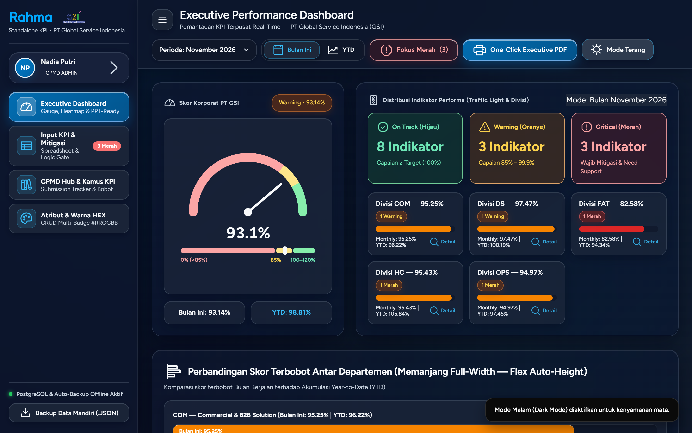
Membuka Modal Perincian Divisi, Grafik Bulanan Interaktif & Cetak Laporan Divisi
Klik salah satu tombol kartu divisi (misal: Divisi COM, Divisi DS, Divisi FAT, Divisi HC, atau Divisi OPS), baris pada Bar Chart Perbandingan, atau sel Heatmap 12 Bulan untuk membuka Modal Perincian Divisi. Di dalam modal ini tersedia:
- Speedometer & Gauge Meter Divisi: Menampilkan skor aktif divisi beserta perbandingan Bulan Ini vs Akumulasi YTD, jumlah KPI On Track / Warning / Critical, dan status validasi Total Bobot 100%.
- Grafik Bar Progres Per Bulan Interaktif (Jan–Des): Klik batang bulan mana pun pada grafik untuk langsung menampilkan daftar KPI yang berstatus Warning (Kuning) atau Critical (Merah) beserta rincian Problem Identification, Corrective Action, dan Need Support BOD pada bulan tersebut.
- Daftar KPI Warning/Merah, Scorecard Lengkap & Cetak Laporan Divisi: Klik tombol Cetak Laporan Divisi di bagian atas modal untuk mengekspor laporan PDF A4 Landscape khusus divisi tersebut, atau klik Input KPI Divisi untuk langsung menuju spreadsheet pengisian divisi terkait.
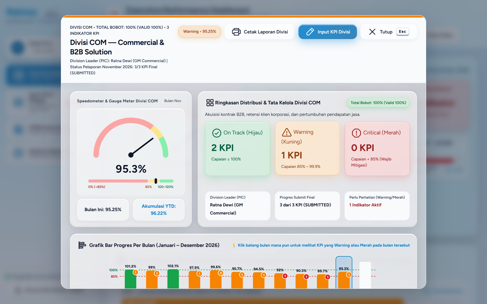
Membuka Drawer Perincian Individu Indikator KPI (Histori 12 Bulan)
Tabel utama menerapkan prinsip Progressive Disclosure agar layar tidak penuh oleh parameter teknis. Klik baris KPI mana pun atau tekan tombol Lihat Rincian untuk membuka panel investigasi yang memuat grafik batang 12 bulan (Januari–Desember 2026), perubahan Month-over-Month (MoM), dokumen lengkap mitigasi, serta rumus polaritas dan plafon skor.
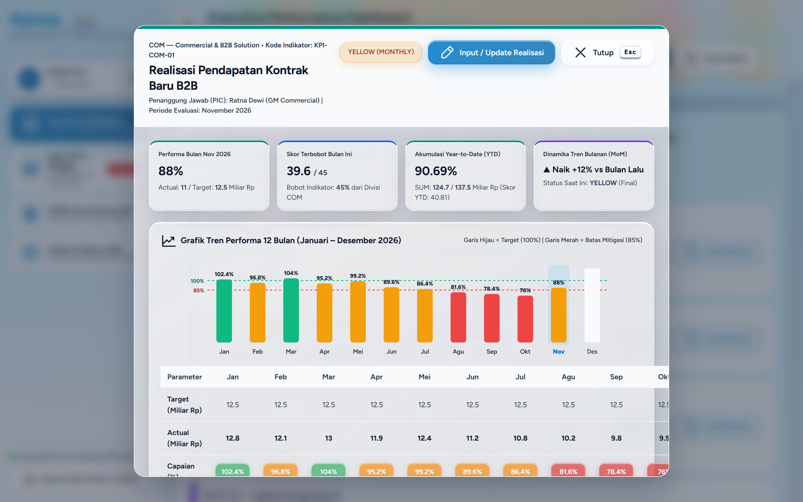
Menu 2: Input KPI Bulanan & Gerbang Logika Mitigasi
Menu Input KPI & Mitigasi memungkinkan Division Leader dan CPMD Admin memasukkan angka realisasi bulanan dengan kecepatan setara lembar kerja Excel tanpa perlu membuka modal satu per satu, sekaligus menegakkan disiplin pengisian mitigasi risiko.
Filter Departemen & Pengisian Angka Realisasi (`Actual`)
Pilih periode bulan pada bilah atas dan departemen pada dropdown Filter Departemen Input. Ketik angka pada kolom ACTUAL, lalu tekan Tab atau Enter untuk melompat ke baris KPI berikutnya. Persentase capaian, skor terbobot, dan status warna otomatis dihitung seketika saat Anda mengetik.
Aktivasi Otomatis Gerbang Logika Mitigasi (Indikator Merah < 85%)
Apabila angka Actual menghasilkan capaian di bawah ambang batas merah (default < 85%),
kartu baris otomatis berubah menjadi merah dan membuka panel Gerbang Logika Mitigasi Wajib Isi.
Memilih Quick-Tag Chips & Melengkapi 3 Kolom Wajib
Klik salah satu atau beberapa Quick-Tag Chips (misal: Kendala Vendor / Sparepart,
Keterbatasan Man-Power, Butuh Keputusan / Capex BOD) untuk menempelkan tag
terstandar, lalu lengkapi ketiga kolom wajib: Problem Identification,
Corrective Action, dan Need Support (Eskalasi BOD).
Menyimpan Draft vs Submit Final
Gunakan tombol Simpan Draft jika Anda masih mengumpulkan data pendukung (draf juga tersimpan otomatis di browser). Klik Submit Final setelah seluruh data valid agar tercatat di Executive Dashboard dan Papan Eskalasi BOD.
Untuk indikator berstatus MERAH, sistem memblokir tombol Submit Final
(mengembalikan status HTTP 422 Unprocessable Entity dan menampilkan popup peringatan merah)
apabila salah satu dari Problem Identification, Corrective Action, atau Need Support
berisi kurang dari 10 karakter.
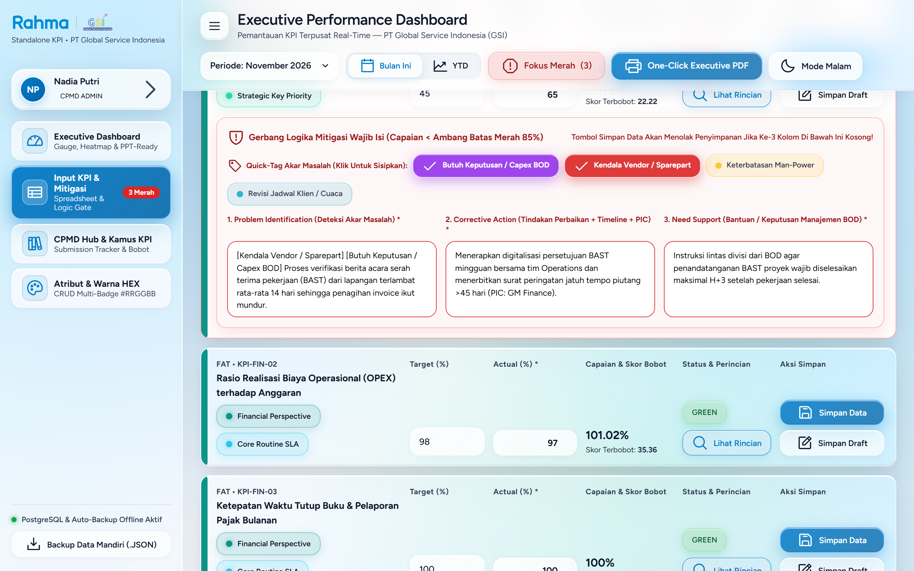
Menu 3: CPMD Hub, Submission Tracker & Kamus KPI
Menu CPMD Hub & Kamus KPI dirancang khusus untuk membebaskan divisi Corporate Planning & Management Development (CPMD) dari pekerjaan klerikal menagih laporan manual dan memastikan bobot KPI setiap departemen selalu terkalibrasi tepat 100%.
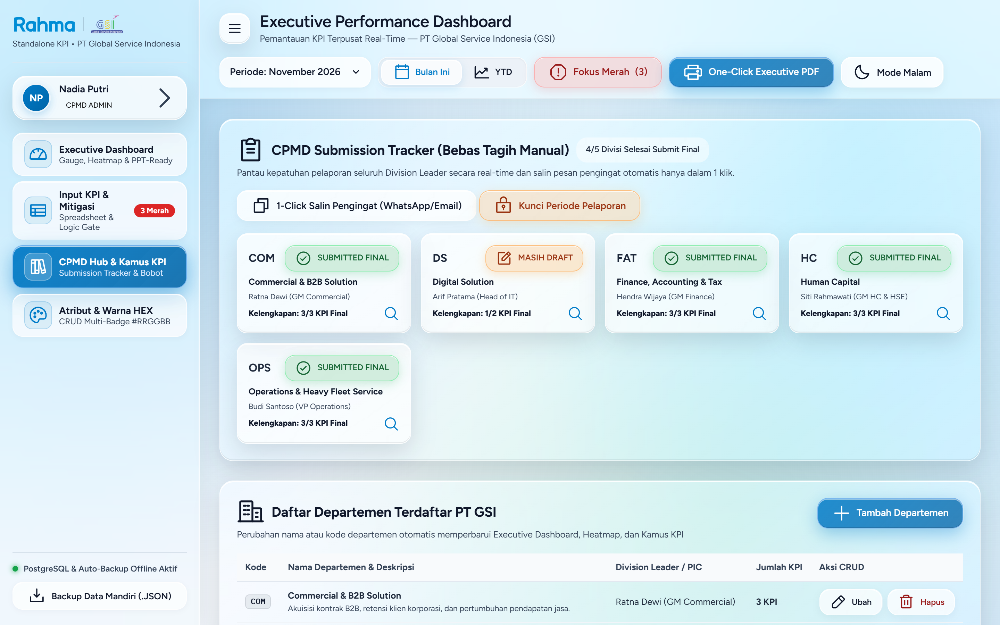
1-Click Salin Pengingat Pelaporan (WhatsApp / Email)
Pada kartu CPMD Submission Tracker, pantau jumlah KPI yang sudah disubmit oleh masing-masing departemen. Klik tombol 1-Click Salin Pengingat (WhatsApp/Email) untuk menyalin naskah pengingat resmi yang otomatis mencantumkan nama Division Leader dan daftar kode KPI yang masih berstatus Draft atau belum dilaporkan.
Mengunci & Membuka Kunci Periode Pelaporan
Setelah seluruh departemen merampungkan laporan bulanan, klik tombol Kunci Periode Pelaporan untuk membekukan seluruh kolom input pada bulan tersebut agar angka tidak berubah selama rapat evaluasi Direksi berlangsung.
Mengelola Master Departemen & Kamus KPI (Validasi Bobot 100%)
Klik Tambah Departemen untuk mendaftarkan unit organisasi baru, atau klik
Tambah KPI untuk menyusun indikator baru beserta satuan, bobot (%), target default,
polaritas (MAXIMIZE / MINIMIZE), metode YTD (SUM / AVG /
LAST_VALUE), ambang merah, dan pilihan multi-atribut warna HEX.
Perhatikan pita status bobot di atas tabel Kamus KPI. Setiap departemen wajib memiliki total bobot tepat 100% (Valid 100%). Apabila penambahan atau perubahan KPI membuat total bobot menyimpang dari 100%, sistem langsung menandai departemen tersebut dengan status peringatan agar CPMD Admin menyesuaikan distribusi bobotnya.
Menu 4: Katalog Atribut KPI & Studio Warna HEX (#RRGGBB)
Menu Atribut & Warna HEX menyediakan studio kustomisasi visual bagi CPMD Admin untuk
mengelompokkan KPI menggunakan lencana multi-atribut berwarna aksen hingga tingkat kode heksadesimal 6-digit
(#RRGGBB).
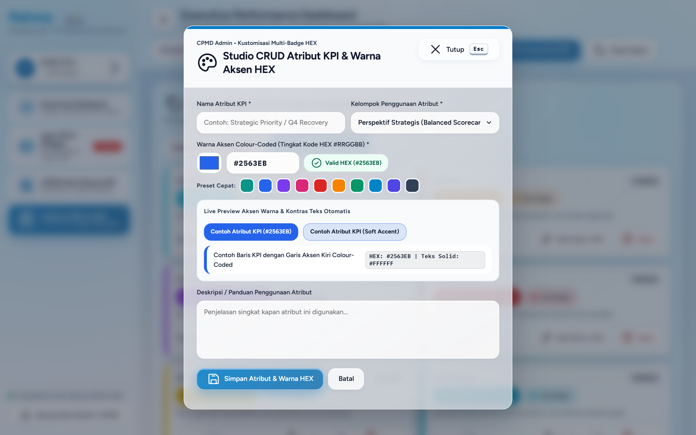
Menambah atau Mengubah Atribut Warna HEX
Klik tombol Tambah Atribut HEX (atau tombol Ubah Nama / HEX pada kartu
atribut). Masukkan nama atribut dan pilih salah satu dari 4 kelompok: PERSPECTIVE (Balanced
Scorecard), CATEGORY (Kategori Tugas), PRIORITY (Prioritas Direksi), atau
MITIGATION_TAG (Quick-Tag Gerbang Merah).
Sinkronisasi Color Picker, Input Kode `#RRGGBB` & Live Preview Kontras
Pilih warna menggunakan Visual Color Picker, klik salah satu dari 10 tombol Preset
Cepat, atau ketik kode HEX 6-digit secara langsung (misalnya #24C9FB atau
#F68400). Kotak Live Preview otomatis menghitung luminansi relatif WCAG
dan memperbarui warna lencana di seluruh tabel, filter dashboard, dan kartu eskalasi.
Sistem melindungi integritas data Kamus KPI: atribut yang sedang terpasang pada satu atau lebih KPI aktif
(ditampilkan pada indikator Digunakan: N KPI) tidak dapat dihapus secara tidak sengaja sebelum
relasinya dilepas terlebih dahulu dari KPI terkait.
Pengaturan Akun, Verifikasi OTP, Personalisasi & Backup
Klik kartu profil pengguna di bagian atas sidebar kiri untuk membuka jendela Pengaturan Akun & Ruang Kerja yang memiliki 5 cabang pengaturan mandiri serta tombol Keluar / Ganti Akun.
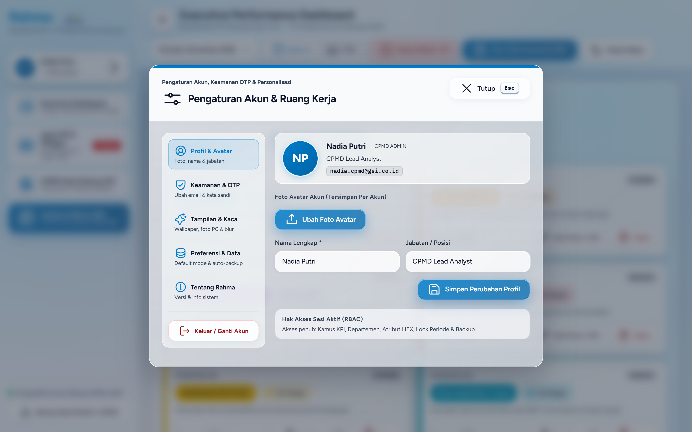
| Cabang Menu | Fitur & Panduan Penggunaan |
|---|---|
| 1. Profil & Avatar | Unggah foto avatar kustom dari komputer (tersimpan per akun), perbarui nama lengkap dan jabatan, serta tinjau ringkasan hak akses RBAC sesi aktif. |
| 2. Keamanan & OTP | Ubah email korporasi atau kata sandi dengan pengamanan Kode OTP 6-Digit (berlaku 5 menit). Klik Kirim OTP, masukkan kode 6-digit yang diterbitkan, lalu klik Verifikasi. |
| 3. Tampilan & Kaca | Pilih 10 tema latar belakang (5 fotografi lanskap Magnifik 2400p & 5 gradien arsitektural), unggah wallpaper dari PC, dan atur intensitas kaca buram (Jernih, Seimbang, atau Fokus Pekat). |
| 4. Preferensi & Data | Atur tema default (Mode Terang / Mode Malam), mode kalkulasi awal (MONTHLY / YTD), konfirmasi perpindahan menu saat ada ketikan belum disimpan, serta sinkronisasi antrean offline. |
| 5. Tentang Rahma & Backup JSON | Melihat informasi build sistem. Untuk mencadangkan seluruh isi basis data PostgreSQL secara mandiri, klik tombol Backup Data Mandiri (.JSON) di bagian bawah sidebar kiri. |
Seluruh notifikasi informasi sistem ditampilkan menggunakan popup berlatar Hitam Pekat (#0A0A0A) Tulisan Putih tanpa aksen hijau agar seragam di Mode Terang maupun Mode Malam, sedangkan peringatan validasi ditampilkan dalam warna Merah (#DC2626) Tulisan Putih. Gunakan Tab / Enter untuk navigasi baris input spreadsheet dan Esc untuk menutup seluruh jendela modal.